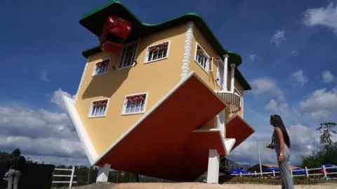

inmobiliaria de casas en venta de puebla
En esta casa todo está al revés. No está construida para entrar a vivir, pero sí para hacer fotos muy curiosas que quedan muy bien cuando les das la vuelta... La Casa Loca, ubicada en la localidad de Guatavita, en Colombia, no fue concebida como una obra de arte, sino como una atracción turística.
tipos de casa en venta
- casa pequeña
- casa mediana
- casa grande
| zona de la casa | precio | estado |
| centro | 200,000 | puebla |
| sur | 100,000 | mexico |